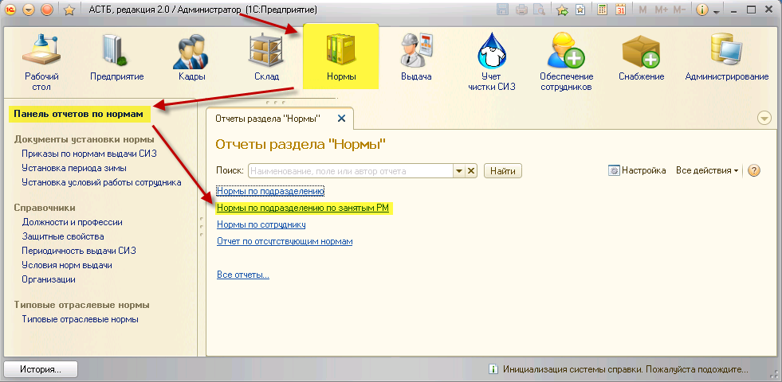
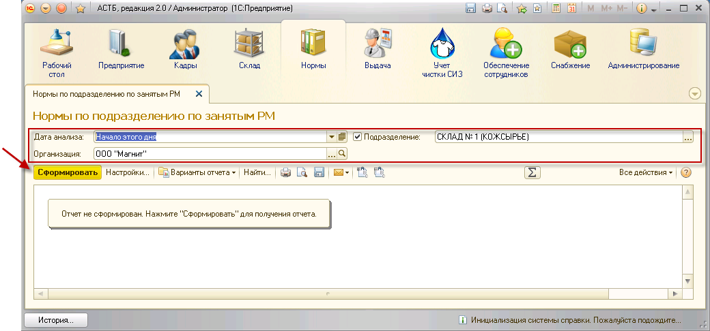
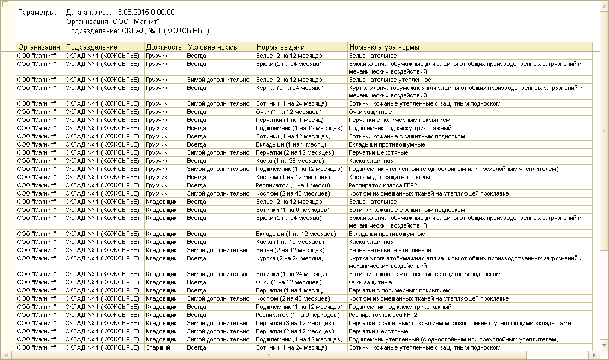

Данный отчет также отображает информацию по нормам выбранной организации с возможностью отбора по подразделениям. Отличие данного отчета от предыдущего состоит в том, что в нем будут указаны только те должности, которые занимают сотрудники организации.
Для формирования отчета необходимо зайти в раздел «Нормы», «Панель отчетов по нормам». В открывшемся окне выбрать отчет «Нормы по подразделению по занятым РМ».

Укажите дату анализа и организацию. Если необходимо, выберите одно или несколько подразделений для формирования отчета, проставив флажок напротив указанного параметра. Затем нажмите кнопку «Сформировать».

По указанным параметрам будет сформирован отчет, отражающий только те должности, которые занимают сотрудники организации с учетом выбранной даты анализа.

Примечание: в отчете будут отображаться дочерние подразделения.
Чтобы распечатать сформированный отчет, нажмите кнопку  на командной панели отчета. Сохранить отчет можно с помощью кнопки
на командной панели отчета. Сохранить отчет можно с помощью кнопки  .
.